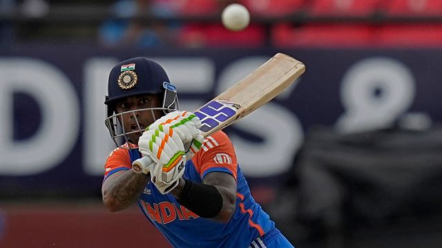

Suryakumar Yadav reveals all: Why he always trains with Kohli, why Dravid thanked Rohit for a phone call and that catch of Miller
A once-in-a-lifetime catch, 1014 Whats
once-in-a-lifetime catch, 1014 WhatsApp messages, and a long night. Suryakumar Yadav's famous grab to dismiss David Miller in the last over ensured India ended India's long ICC trophy drought. Devendra Pandey spoke to Surya the day after the final when he reflected on the momentous events at Bridgetown and what it meant for him and the team.A
